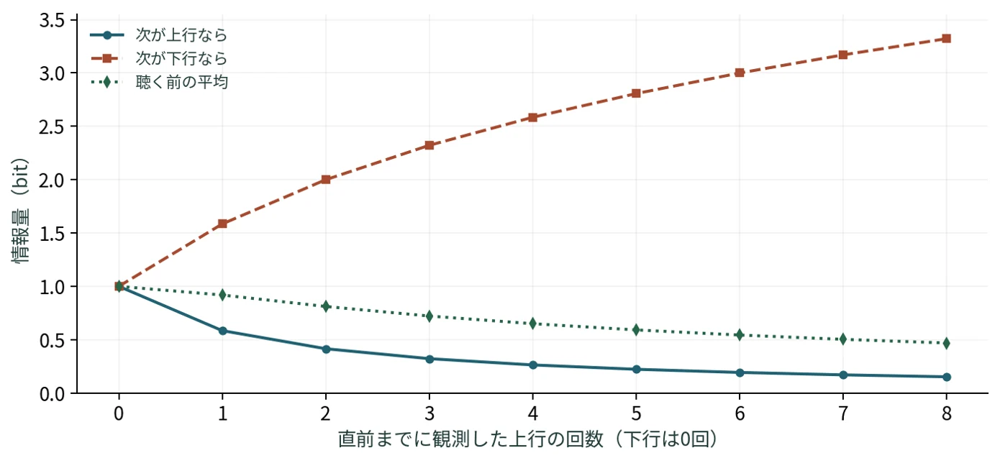

第53章 次の一音が来る前に何が計算できるか
次の音の「予測しにくさ」と「意外さ」を、情報量（bit）で測る。
この章で学ぶこと
- 自己情報量とエントロピーを定義する
- 二択モデルで、予測と驚きを計算する
- ハイドン《驚愕》で、モデルが何を見落とすかを確かめる
終止音を伏せた譜面
二つの小節を口ずさみ、最後の音の直前で止める。誰かが続きを歌っても、楽譜と違う音には意味がある。その瞬間までの材料から、どんな続きがありそうに聞こえたかを示すからだ。予測には「どれが来るかまだ絞れない」状態と、「予想が定まっていたのに別の音が来た」出来事がある。この差を数で書くには、実際に鳴った一音以外に、鳴りえた一群の候補も記録する必要がある。
直前までの文脈を 、選択肢を 、規格化された予測確率を とする。以下の計算では、文脈と事象の符号化を明記する。音名を選ぶ問題と、「上行・下行のいずれか」を選ぶ問題では選択肢の数も異なる。同じ曲について両方を計算できる。
掛け算を足し算に変える
独立な二つの出来事の確率は掛け算で結ばれる。独立な出来事二つを言い当てたときの情報の量を足せる尺度にしたい。確実な出来事なら0、確率 の出来事なら1とする。正の確率 をもつ一事象の自己情報量を と定義すれば、、、 が同時に成立する。単位は bit である。確率 の着地は3 bitであり、8候補を等確率として二分探索で指定するときの三つの二択に対応する。
次の音を観測する前に、自己情報量の期待値も計算できる。候補の集合を として、文脈を固定した分布のエントロピーは
確率ゼロの項の寄与は極限によって0と置く。予測でゼロを与えた事象が実際に起きれば、そのモデルによる当該事象の自己情報量は正の無限大になる。観測例が少ないのに未出の音を不可能とする模型には、この破綻が起きる。

二音の動機の実験台
二音からなる短い動機の末尾を、最初の音からの上行U、下行Dの二通りに限定する。同音は使わない。Uを 回、Dを 回観測したとき、双方の回数に予備の1を足し、、 と見積もる。図は直前までに上行のみを 回観測した場合である。この模型では順序を入れ替えても確率は変わらない。そこで「上行の直後だけ下行しやすい」という系列規則は、学習回数をいくら増やしても捉えられない。
やってみよう
検算。 上行が6回続いたあと、、。次の二音が下行すれば3 bit、上行なら約0.193 bit。聴く前のエントロピーは bit。同じ予測分布から生じた値なのに、鳴る前は小さく、実際の結果については大きくなりうる。
命題（旋律全体の自己情報量）。 列 の同時確率が正であるとき、各時点で実際に来た選択肢の自己情報量の合計は、列全体の自己情報量に等しい。
証明を読む（読まなくても先へ進めます）
最初の 個の列を とし、空列の確率を1と置く。条件付き確率の定義から 。 から まで掛けると分子と次の分母が消え、 が残る。両辺に負の底2対数を施せば、積は各時点の負の対数の和になる。独立性は仮定していない。
ハイドンで模型を失敗させる
《交響曲第94番》第2楽章冒頭を、小さな再生音量で一度通して聴く。静かな主題が繰り返されたあとに、合奏の強い和音が突き出す。上行と下行だけの分析器にこの楽章を与え、同じ音高のまま強弱だけを編集しても、その出力は同じになる。音楽上の驚きを説明しようとするなら、模型が入力から何を捨てたかが問題になる。
実験には自作の二小節でもよい。四つの二音動機を「C–D、D–E、E–F、F–G」とし、最後に強いアクセントが来る版と、全体が弱い版を用意する。続いて最後だけ「F–E」にした二版を加える。音色とテンポを固定し、計四条件をランダムな順で聴く。各版につき「次の音高を予測できたか」「強弱の変化を予測できたか」を別の欄に記す。以前聴いた楽曲なら、譜面の知識で予告できる驚きと、生理的な反応が共存しても不思議はない。連続的な感じ方を記録する場合は、指で評価を動かす反応時間も測定系に含まれる。
二度目は和声付けを替える。F–E はハ長調でIV上の根音からIの第3音へ動く配置にも、同じ和音の上で上方の刺繍音がEへ戻る配置にもできる。同じ方向記号Dでも、どの文脈を観測させるかでモデルが比較する音楽的事象が変わる。旋律の書法で扱った句末を一つ選び、音名、音程方向、伴奏の和音、拍内位置のどれを与えたとき自分の予測と近くなるか試してみよう。
やってみよう
課題と解答。 毎回Uと答える模型と、UとDに各 を与える模型を、未使用の列 U・U・D・U で評価する。列の生起確率も一音当たりの実現情報量も求めよ。前者が各回 と宣言するなら、Dで確率の積がゼロとなり、平均情報量は無限大である。後者が各回を独立に予測すれば 、全列4 bit、一音当たり1 bit。正解率だけを比べると、前者は4回中3回を的中させた。確率まで宣言する予報では、自信を置きすぎた失敗が違う姿を見せる。
ここだけ押さえる
- 確率 1/8 の出来事の情報量は 3 bit。
- 聴く前の不確かさ（エントロピー）と、実際の驚き（自己情報量）は別の量。
- 確率ゼロと予測したことが起きると、驚きは無限大になる。
この章の資料
- 対数の底と情報の単位、情報源に統計的な規則があるときの記述量を原著に戻って読む。Shannon『A Mathematical Theory of Communication』PDF
- 音高の続きを予測するモデルと聴取者の判断を比較した実験。読者の小さな二択模型を拡張するとき、学習用資料と未聴旋律をどう分離するかに注目する。Pearce ほか、確率的学習と旋律期待の原著 PDF
- 事前の不確実性と、実際の音が来たときの情報量を分けて実験した研究。Hansen・Pearce「Predictive uncertainty」全文
- 反復される静かな旋律の音高と、合奏が割り込む強弱の推移を二巡に分けて聴く。ハイドン《交響曲第94番》第2楽章、レーベル配信音源